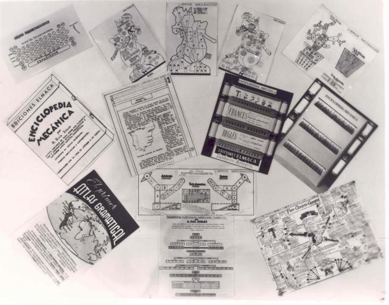

Inventos



Nacida en Villamanín (León, España) el 28 de marzo de 1895, hija de Elena Robles y del farmacéutico Feliciano Ruiz.
Realizó sus estudios superiores en la Escuela de Magisterio de León,
donde impartió sus primeras clases de taquigrafía, mecanografía y contabilidad mercantil entre 1915 y 1916.
En 1917 fue docente y directora en la Escuela de Gordón, en León.
En 1918 obtuvo la plaza de maestra en Santa Eugenia de Mandiá, una aldea próxima a Ferrol.
Estuvo allí hasta 1928.
El 18 de diciembre de 1925 recibió «una distinción especial por sus indiscutibles méritos
en agradecimiento a su dedicación y la atención desinteresada» promovida por sus convecinos.
En 1934 realizó una importante labor como gerente de la Escuela Nacional de Niñas del Hospicio.
En 1945 fue profesora de la Escuela Obrera gratuita.
En 1948 enseñó taquigrafía, ortografía, gramática y mecanografía en el Colegio Ibáñez Martín.
En 1959 accedió al cargo de directora, que mantuvo hasta su jubilación.
Entre 1938 y 1946 escribió, dio conferencias, editó y reeditó la mayor parte de su obra científica,
un total de dieciséis libros.Sus tres primeros son: Compendio de ortografía castellana,
Ortografía castellana y Taquigrafía martiniana abreviada moderna.
Impartió clases a opositores de aduanas, correos, telégrafos y para el ingreso en altos estudios mercantiles
en la academia para adultos de su propiedad, Elmaca.
Fallecería el 27 de octubre de 1975, con 80 años, en El Ferrol, España.